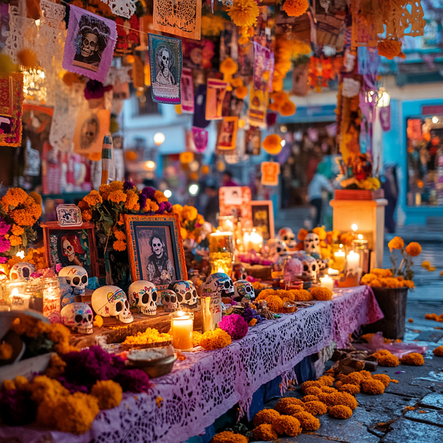

Una fiesta para recordar con amor a quienes ya partieron

Esta tradición nace de la mezcla de dos mundos. Los pueblos antiguos de México (como mexicas y mayas) pensaban que la muerte no era un final, sino un paso hacia otro lugar.
Con la llegada de los españoles se unió con las fiestas católicas de Todos los Santos y Fieles Difuntos. De esa mezcla salió el Día de Muertos que hoy conocemos.
En 2008 la UNESCO lo reconoció como Patrimonio Cultural Inmaterial de la Humanidad.
Día de los Angelitos. Se recuerda a los niños que fallecieron.
Día de los Fieles Difuntos. Se recuerda a las personas adultas.
Las familias empiezan a preparar todo desde finales de octubre.
Es un altar en casa con fotos, velas, flores, comida y agua para recibir a las almas.
Las familias limpian y decoran las tumbas, y pasan ahí la noche con música y recuerdos.
Se escriben versos divertidos y se hacen desfiles y concursos de catrinas.
Son el color de la flor de cempasúchil. Representan el sol y la vida, y sirven de camino para las almas.
Simboliza el luto y el duelo.
Representa la pureza y la esperanza. Se usa mucho para los niños.
Es el color de la fiesta y la alegría de recordar.
Se cree que las almas vienen con hambre y sed. Por eso se pone lo que más les gustaba en vida.
Pan dulce con adornos en forma de huesos.
Platillos de fiesta que se comparten en familia.
Llevan nombres escritos en la frente.
Atole, chocolate caliente y agua para la sed.
También hay fruta, calabaza en tacha y la bebida favorita de la persona recordada.
Dios mexica de la muerte. Gobernaba el Mictlán, el lugar de los muertos.
La Señora de la Muerte, esposa de Mictlantecuhtli. Cuidaba los huesos de los difuntos.
Calavera elegante creada por José Guadalupe Posada. Hoy es el símbolo de la fiesta.
Perro sin pelo que, según la creencia, guía a las almas en su viaje.
Llega a México por estas fechas. Muchos creen que lleva las almas de los difuntos.
Recuerda: en un panteón estás en un momento muy personal de una familia. Observa con calma y con respeto.